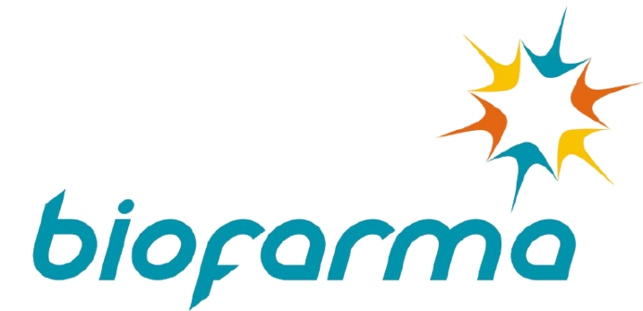
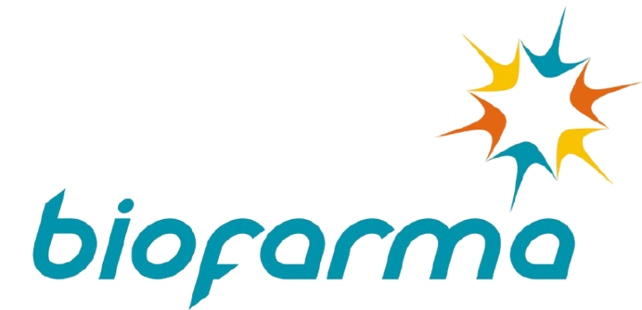
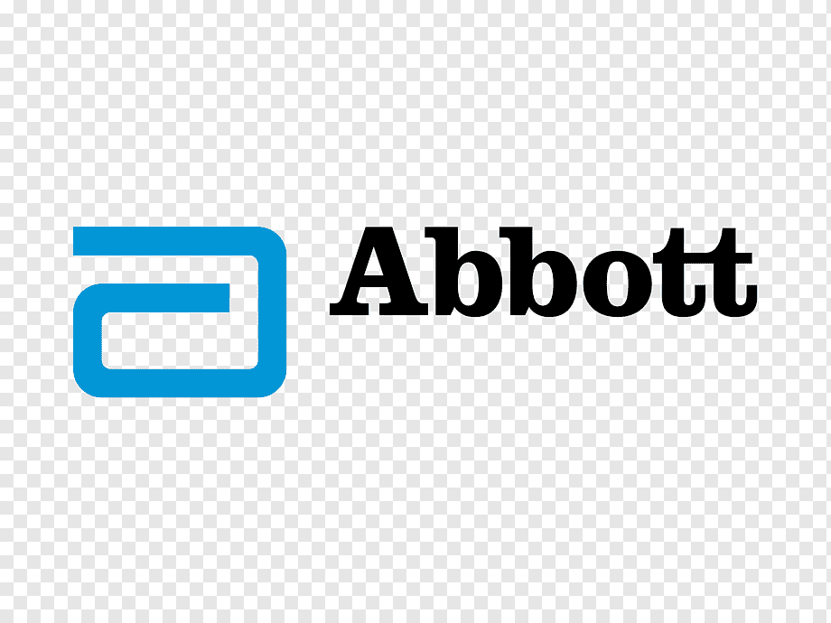
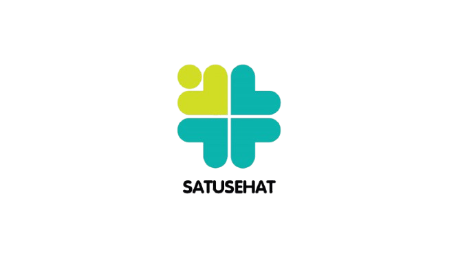
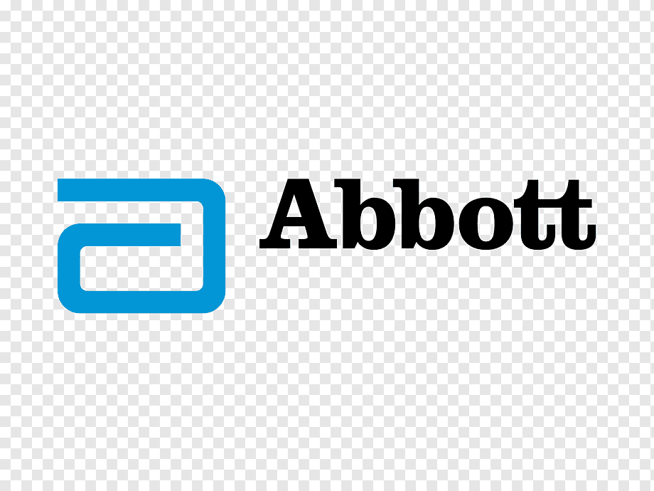
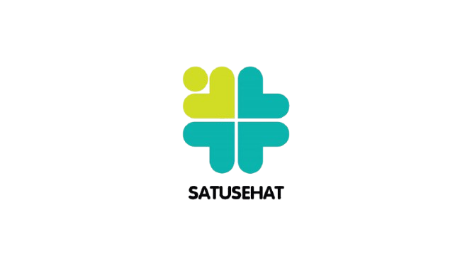

Kami berkomitmen memberikan pelayanan kesehatan terbaik dengan standar internasional
Dengan tenaga medis profesional dan ramah
Peralatan medis canggih dan terkini
Layanan vaksinasi yang terjamin keasliannya
Pemeriksaan cepat, akurat, dan efisien
Fasilitas nyaman & pelayanan terpercaya
Homeservice & layanan korporasi fleksibel
Lokasi strategis dan parkir luas
Kepercayaan dan kepuasan pasien adalah prioritas utama kami
"Home service-nya praktis banget, protokol kesehatannya ketat, dan hasilnya langsung beres di hari yang sama. Terima kasih, BUMC!"
.jpeg)
"Karena hari ini kami harus ke luar kota, senang sekali bisa vaksinasi di rumah. Prokesnya super ketat. Makasih BUMC!"
“Cobain home service untuk vitamin injection dari BUMC—praktis, cepat, dan bikin badan lebih fit. Love it!”
“Aku sekeluarga baru aja swab PCR plus immune boost bareng BUMC. Home service-nya profesional dan super higienis. Thank you so much, BUMC!”

“Sebelum kerjaan luar kota, aku di-swab dulu sama tim BUMC. Cepat, rapi, dan bikin tenang!”

“Pelayanannya top! Staf dan dokternya ramah banget. Waktu saya sakit tinggal booking, datang tanpa antre, dan fasilitasnya bersih serta wangi. Recommended!”
Bekerja sama dengan institusi kesehatan terkemuka
 

 



Layanan kesehatan komprehensif untuk seluruh keluarga
Dapatkan solusi kesehatan dengan konsultasi langsung bersama tenaga medis profesional untuk keluhan sehari-hari maupun kebutuhan khusus
Menangani pemeriksaan dasar, memberikan diagnosis awal, serta rujukan sesuai kebutuhan Anda.
Layanan mendalam untuk berbagai kondisi kesehatan organ dalam, dengan pendekatan holistik dan berstandar internasional.
Perawatan gigi dan mulut menyeluruh, mulai dari pemeriksaan rutin hingga tindakan perawatan estetik.
Didukung teknologi pencitraan modern untuk menunjang akurasi diagnosis dan perencanaan terapi.
Lindungi diri dan keluarga dari berbagai penyakit dengan layanan vaksinasi lengkap sesuai kebutuhan
Program kesehatan terintegrasi untuk perusahaan, mulai dari vaksinasi karyawan hingga medical check up berkala
Pemeriksaan kesehatan menyeluruh dengan paket yang dapat disesuaikan, untuk deteksi dini dan pencegahan penyakit
Kenyamanan perawatan kesehatan langsung di rumah Anda, dengan tenaga medis profesional dan protokol keamanan ketat.